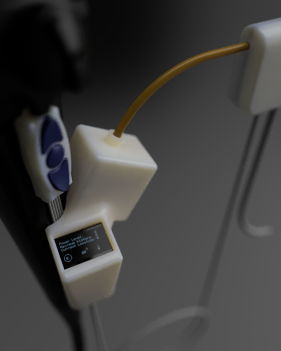
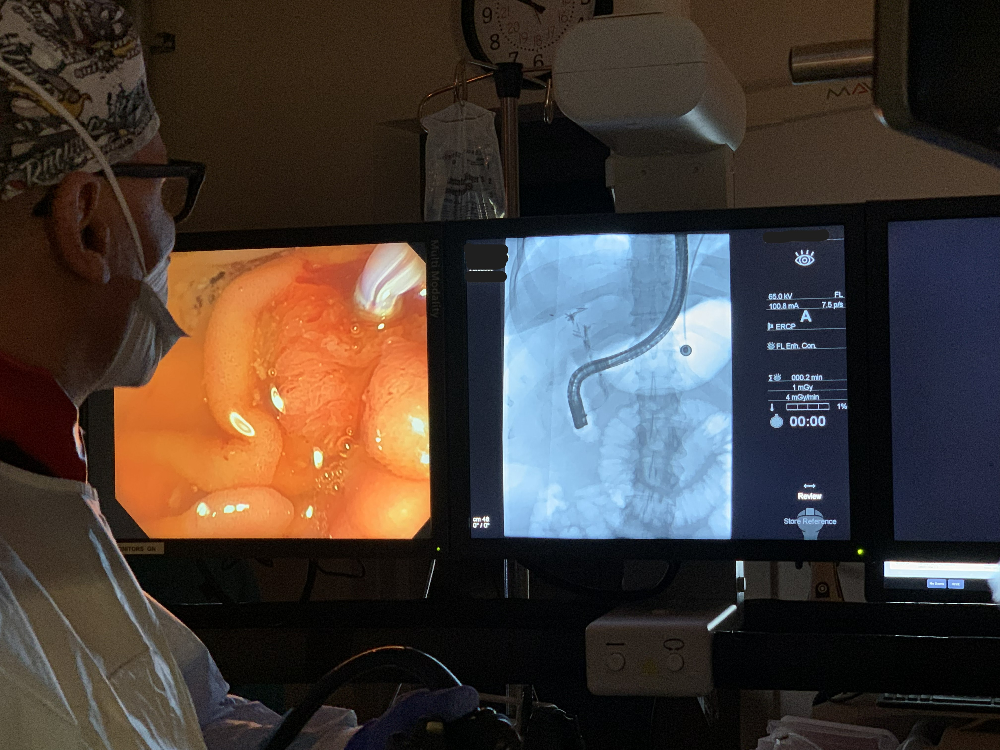
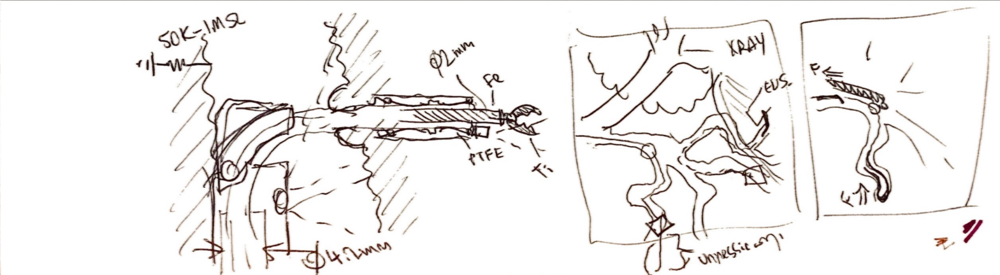
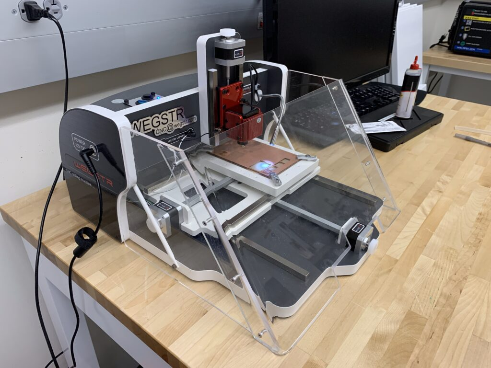
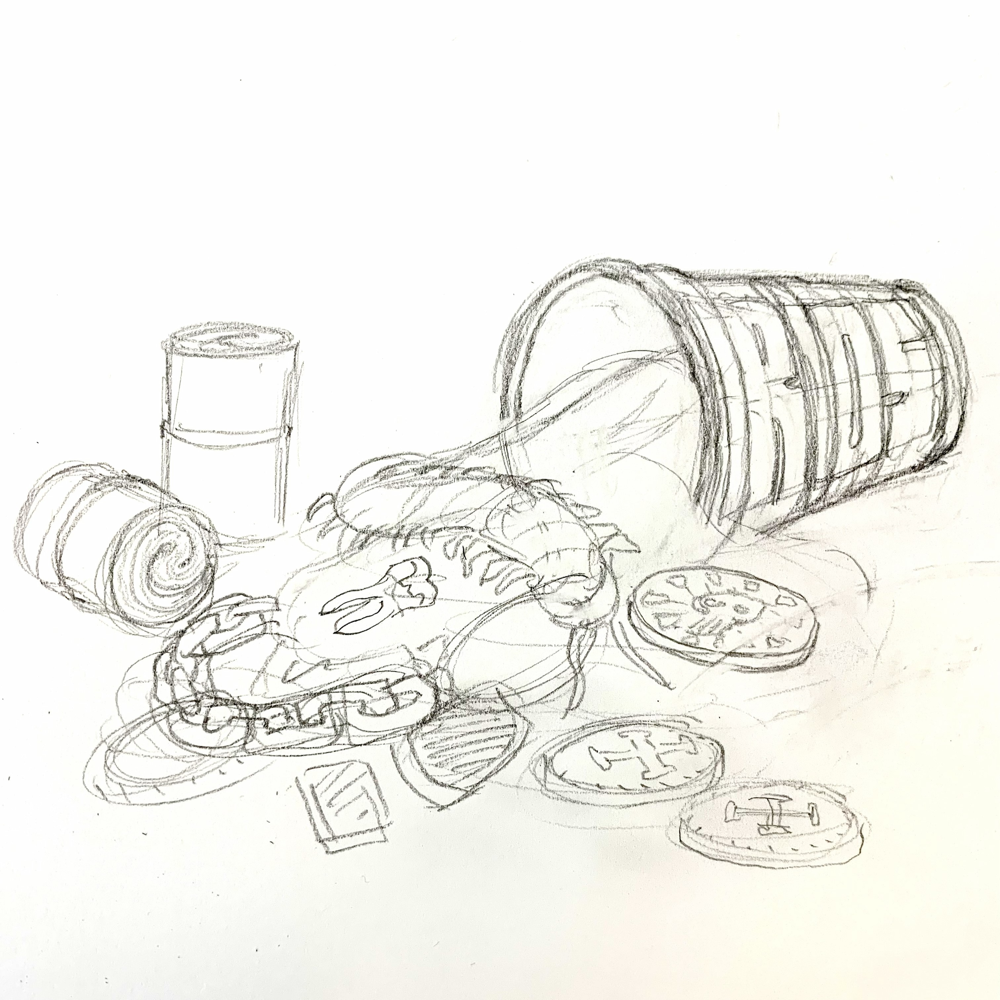
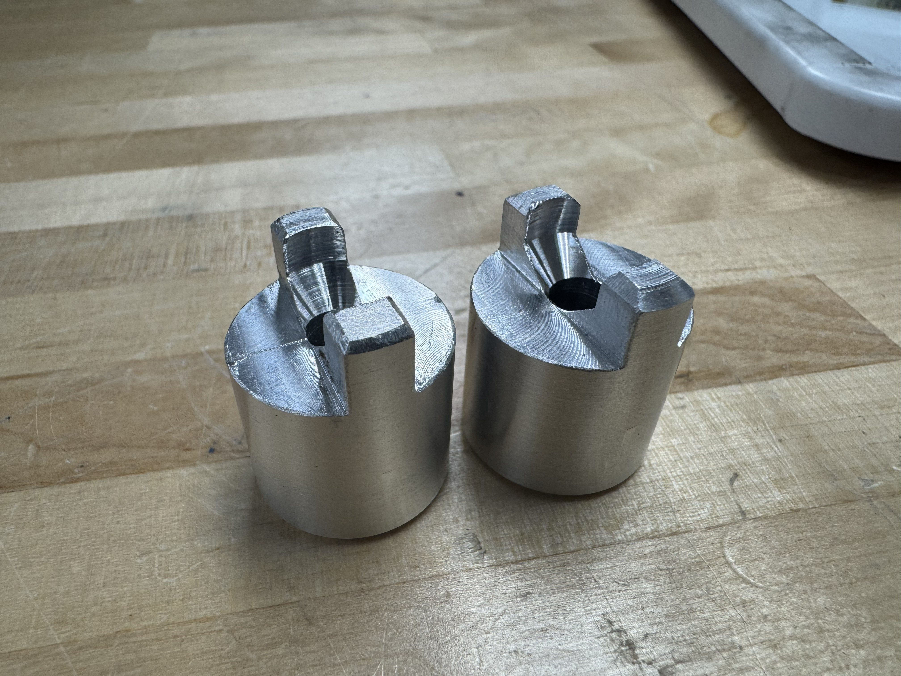

Projects

Endoscopic GI Surgical Actuator
Working alongside Dr. Todd Baron and Dr. Lisa Gangarosa at UNC Hospital's Advanced Endoscopy Fellowship, our team identified a clinical need: existing endoscopic tools create post-surgical complications that a redesigned actuator geometry could reduce. I led a team of eight through three years of design, prototyping, and verification — beginning with OR shadowing to understand the procedure environment firsthand.
The design process ran from clinical needs-statement development through ideation sketches — specifying PTFE sleeves, titanium construction, ø2mm working channel geometry, and shape-memory alloy actuation rings — to full parametric CAD and a working proof-of-concept prototype with embedded electronics and an OLED UI displaying power level, machine history, and current position.
All product, manufacturing, testing, and labeling documentation was developed in accordance with ISO 13485, 21 CFR 8xx, and IEC 60601-1, managed throughout in Greenlight Guru QMS. Prototype fabricated across UNC's fabrication facilities using available in-house methods.



Acrylic Safety Shield for Wegstr CNC
The department's PCB mill had an exposed cutting tool and produced fiberglass dust — a hazard that made it underused. I designed a custom acrylic enclosure that solved both problems while giving the machine a professional finish.
Measurements went straight into Adobe Illustrator. Panels were cut from 12×24in stock, bent with a strip heater, and bonded with DCM solvent. 1/8" sheet metal rivets — preferred over clamps — held alignment during the cure. Motor recesses were cut by hand with an expo marker and jeweler's saw.
While at the laser, I also made a dedicated tool holder with the standard Cut2D CAM workflow order. PCB process: Tinkercad → Fusion 360 → DXF → Cut2D → mill → microscope → solder → conformal coat.


Album Cover Commission
Jose "MoneyBag$" Rios commissioned an album cover for his first single. He's a native of Mexico City and wanted to honor his heritage while celebrating contemporary rap culture — a brief calling for rich cultural imagery fused with modern energy.
The process ran from inspiration research through ideation sketches to final execution in alcohol marker, micron pen, gel pen, and colored pencil on 11×14in paper. The finished piece was exhibited at the "Pancakes & Booze" pop-up art show.



3D Print Queue Management System
The UNC BME Fabrication Lab had high demand and zero visibility — two Ultimakers, two Formlabs, a Stratasys, and no tracking. The result was deadline-night chaos (literally rock-paper-scissors at 2am before capstone presentations).
I built a Google Form capturing contact info, machine, material, and print timing. App Script converts responses into Google Calendar events. A 42in NEC display running DakBoard on a Raspberry Pi Zero 2W puts the live calendar front-and-center in the print area, with the department's Flickr feed as a rotating background.
Three years of data now feed filament preference graphs, machine usage stats, and reimbursable lab tracking. Print tracking went from 0% to 30–40% within two semesters.



Emergency Z-axis Manual Override
The Universal Laser's Z-axis is notoriously problematic — three leadscrews in plastic nuts, driven by a single NEMA 23, with an unprotected serpentine belt. When the bed froze at its lowest position with the belt needing re-synchronization, the situation was a classic chicken-and-egg: can't raise the bed without fixing the belt; can't fix the belt without raising the bed.
Solution: machine a brass adapter from 5/8" round bar stock to extend a leadscrew through the sheet metal frame, accepting a salvaged knob. Four grub screws and a slotted spring pin handle torque. Drilling the access hole at angle into a $50k machine with marginal tooling was, per the write-up, "the third sketchiest part of the week."
The fix worked. The knob now lives as a permanent emergency maintenance tool — drop it in, raise the bed, pull it out.